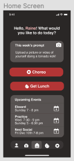
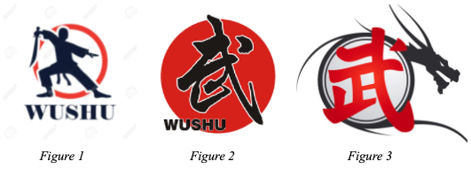

high fidelity prototype.
Part I: Creating a High Fidelity Prototype in Figma
Next, we created another interactive prototype that was high-fidelity in look and medium-fidelity in breadth. We used this prototype to explore the graphic design of our final implementation. We layed out controls, as we wanted them to appear in our final implementation and decided on colors, fonts, alignment, icons, and white space. Following these guidelines, we created the screens necessary for a user to complete one of the tasks (viewing choreo videos) that we previously mentioned on the User Analysis page.
Home page
Choreo videos

Part II: Design Rationale for the High Fidelity Prototype
Typography:
we chose a sans serif font (Helvetica) because these fonts are easy to read on
a variety of devices in a variety of sizes. It also goes with the clean and
minimalistic design of our application. We also used bolding to denote the titles
of pages, sections, or buttons and kept the text the same color throughout to maintain
consistency.
Color:
deciding on the choice of color was one of the most difficult decisions for us to make.
We wanted a unique color scheme that would both stand out from color schemes of other apps
and also be associated with Wushu. After doing some research, we found that most Wushu logos
used a red, grey, and black color scheme (see figure 1-3 below) so we decided to use these
colors for our application. Instead of a hard black and red we softened the colors in our design
to reduce the contrast and make the design visually more digestible. The buttons on this design
are all colored red to denote that you can make an action and to make them stand out slightly against the grey and
black background colors. The primary background color is a soft black to create a contrast
against the white of the text and the red of the buttons.
Graphic Design Choices:
Almost every user we tested used the icon based navigation bar at the bottom of
the screen home page very easily so we kept that in our design and put the icons
that corresponded to each action next to the buttons on the home page to further
clarify the meaning of each icon. The icons in the nav bar are also arranged
directly next to each other so that the user can quickly navigate between the pages
(in accordance with Fitt’s law). The videos on the choreo page are arranged in a
gallery format (similar to how media is arranged in Google Drive) so that they are
easy to view and intuitive to navigate. All videos have a play button over them so that
it is clear what kind of media they are and that they can be clicked on to be played.
Additionally, spacing between buttons/sections/titles on the page are all vertically
equidistant to increase visual appeal and legibility.
